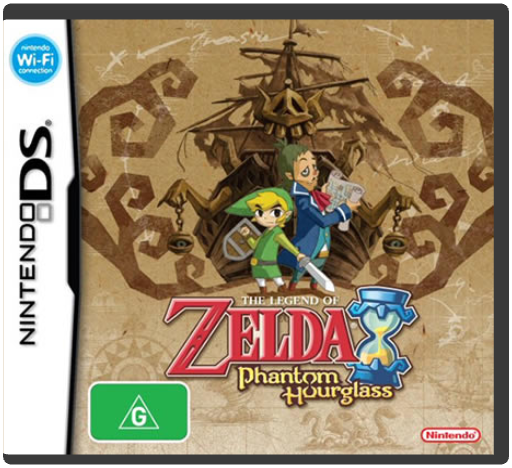
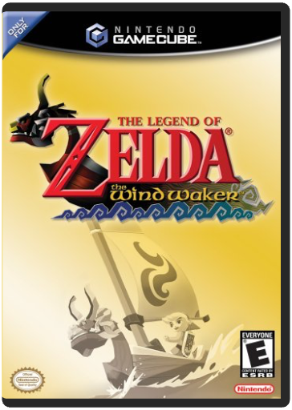
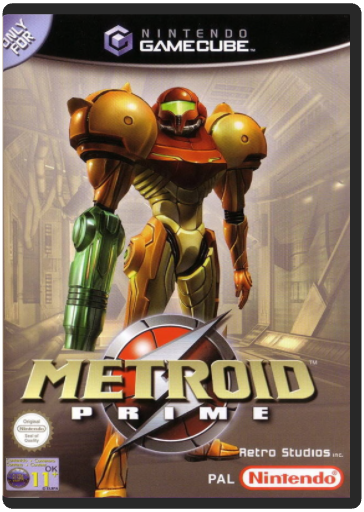
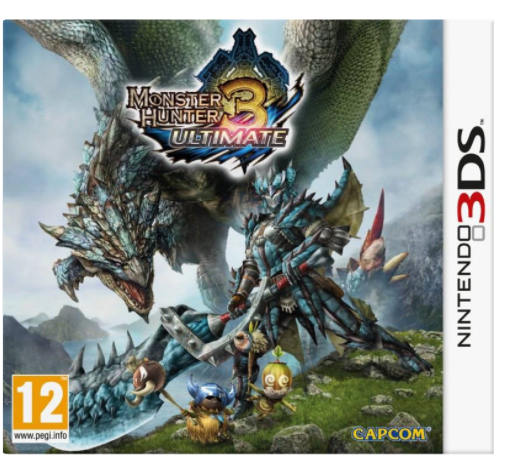
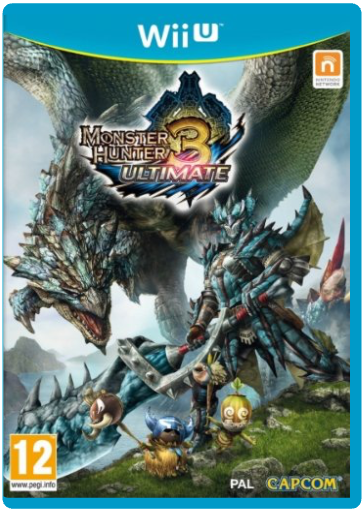

 The Legend of Zelda: Phantom HourglassNintendo Continue the Wind Waker adventure in Link's first DS game !The epic story of The Legend of Zelda: The Wind Waker continues as Link finds himself lost and alone in unknown seas in a new adventure. Featuring intuitive touch-screen controls and innovative pu  The Legend of Zelda: The Wind WakerNintendo Continue Link's adventures with Legend of Zelda: The Wind Waker. You'll experience sword-swinging action, perplexing puzzles and stirring storylines. The trouble starts when Link witnesses his sister being snatched up by a giant bird. He then embarks on an epic voyage to locate his sister. |  Metroid PrimeNintendo The promise of mature gaming on the GameCube finally comes from a top quality release courtesy of Nintendo itself. Get ready to shoot, jump and puzzle your way through Metroid Prime, the creepiest, coolest GameCube game yet.
As difficult to pigeonhole as its predecessors, Metroid Prime is not, despite what the first person viewpoint might suggest, just a shoot-'em-up. Containing as much platform jumping and puzzle solving as shooting, the game is more like an action-based version of Zelda than any one-note Doom clone.
As usual the game stars bounty hunter Samus Aran (perhaps gaming's only female character that isn't scantily clad) in her ongoing battle to contain the freaky jellyfish-like metroids. To do this she must explore and search every nook and cranny of the game world, not just for ways to uncover the plot but for upgrades to her super-cool armoured battle suit. These range from obvious things such as new weapons and gadgets like an infra-red visor to a grappling hook and the hugely satisfying morph ball, which allows you to turn into a giant metal ball bearing and explore previously inaccessible areas.
Apart from its uniquely involving gameplay Metroid Prime also features some of the best graphics ever seen on a home console. What's more, they aren't just used in a soulless technical demo; they're used to create a creepy and totally immersive atmosphere unrivalled by any other title. As an added bonus, Metroid Prime connects to the Game Boy Advance title Metroid Fusion to unlock a hidden costume and the complete version of the original Metroid game for the NES. All in all, this is likely to be one of the best games you'll find for some time. — David Jenkins Metroid Prime: TrilogyNintendo The new Wii controls will bring an entirely new level of immersion and freedom to these milestone games, Metroid Prime, Metroid Prime 2: Echoes and Metroid Prime 3: Corruption. Metroid Prime: Trilogy will offer the ultimate Metroid collector's item for all Metroid fans and those who are looking for the ultimate first-person action game.
One Disc, packaged in an exclusive sleeve, offering all three great Metroid first-person action titles but now all adapted to be played with the Wii Remote and Nunchuk.Players control Samus by moving with the Nunchuk controller and aiming with the Wii Remote controller, allowing for a level of immersion unlike anything they have ever experienced. It's a quantum leap in first-person control.Samus employs well-known power-ups like the Grapple Beam and Morph Ball, as well as new surprises, to help her survive. Using the Wii Remote and Nunchuk controllers, players will be able to grasp and pull things by using actual arm movements, as well as execute amazing feats like aiming and blasting in midair or at a full run.Collect coloured badges throughout all three titles and swap them for extras.  Monster Hunter 3 UltimateNintendo Please Note: 3DS titles are not compatible with standard Nintendo DS consoles
Monster Hunter 3 Ultimate is a multiplayer action game with elements taken from role-playing games and MMORPGs. The player takes on the role of a hunter in a mediaeval-themed setting, and can join with other hunters both online and offline to try to defeat a range of cunning, powerful and often gigantic monsters. Players can gather items and supplies from the surrounding environment, as well as harvesting components for weapons/armour from defeated monsters. As the player hunts and defeats more formidable foes, they can fashion more efficient weapons and stronger armour, marking them out as skilled hunters.
The game will be released on both Nintendo 3DS and on Wii U with compatible, transferable save-files, enabling the user to continue his progress across both consoles. There are also extensive multiplayer options, both offline and online with both Nintendo 3DS and Wii U players. Compatibility with Nintendo 3DS version, including transferable save files.Local and online multiplayer for Nintendo 3DS and Wii U players togetherNew Large Monsters to defeatOver 2000 new pieces of equipment and 500 new itemsFree weekly DLC quests to undertake!  Monster Hunter 3 UltimateNintendo Please note WiiU titles are not compatible with the standard Nintendo Wii
The popular fantasy action franchise Monster Hunter is now one of the most iconic gaming series in the world selling over 21 million copies worldwide since the series began in 2004. Players take on the role of a hunter and are sent to explore a settlement within the Monster Hunter universe, completing quests on their journey to seek and slay monsters whilst improving their skills and earning equipment upgrades. With many challenging monsters and over 200 quests the latest edition to the series is set to be the most expansive offering to date.
Monster Hunter 3 Ultimate utilises the functionalities of the Wii U console and Nintendo 3DS system to provide players with a truly intuitive hunting experience. The touch screen feature of both platforms allows players to quickly access in-game books, weapons, field maps and mini games whilst the high quality graphics of Wii U and 3D visuals of Nintendo 3DS powered by the latest iteration of Capcom's MT Framework deliver a unique and stunning world for players to explore. Taking advantage of the portability of Nintendo 3DS, players can exchange their guild card that contains all their hunter's information with other players via StreetPass.
Players can experience the world of Monster Hunter alone or in four player local play using Nintendo 3DS. Finding nearby hunters to adventure on quests with is now even easier via the local Nintendo 3DS search feature. Wii U players will be able to enjoy the hunt with Nintendo 3DS players via a local wireless connection. Gamers that own both a Wii U and Nintendo 3DS can take advantage of the inter compatibility of save data between the two consoles, taking the hunt from the living room wherever they go.
Compatibility with Nintendo 3DS version, including transferable save fi |


 Made with Delicious Library
Made with Delicious Library